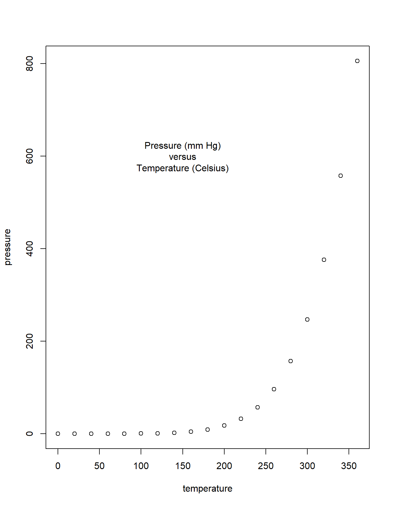
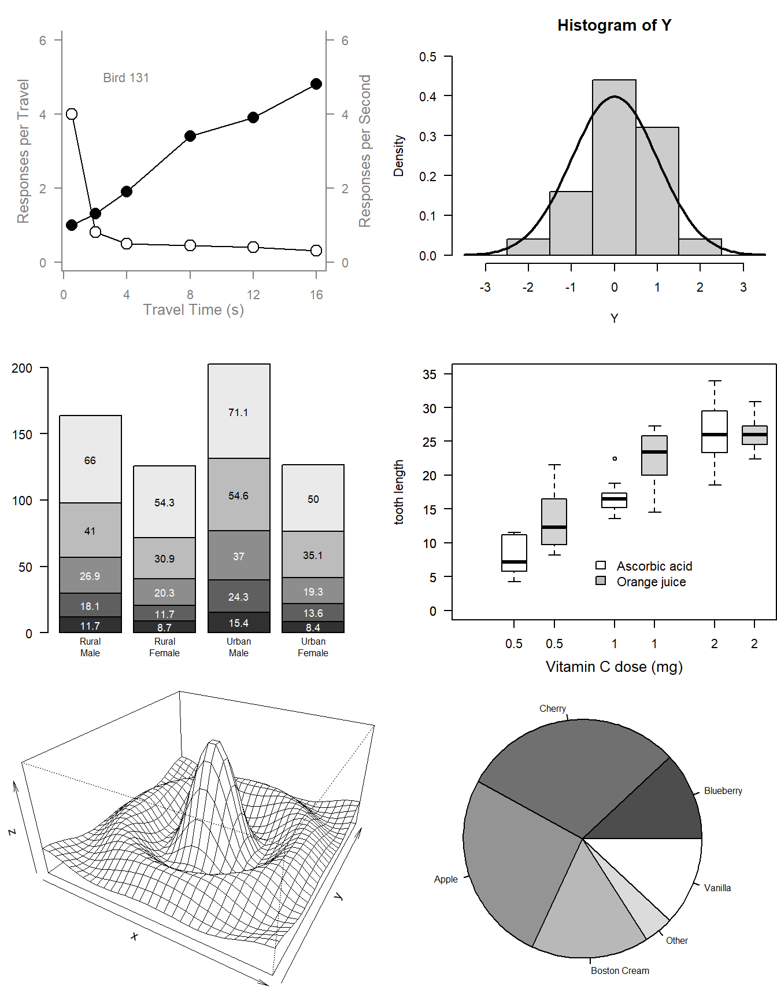

Code
set.seed(1)
## Murrell, R Graphics (3rd ed.), chapter 1 - Figures 1.1 and 1.2
## Annotated walk-through: run ONE line at a time (Ctrl+Enter) and watch the
## Plots pane. "DEVICE:" notes say what changes after each call.
## ---- Figure 1.1: a simple scatterplot --------------------------------------
plot(pressure)
# DEVICE: new page; axes, box, labels and 19 points (temperature vs pressure).
text(150, 600, "Pressure (mm Hg)\nversus\nTemperature (Celsius)")
# DEVICE: nothing is erased; the text is added at DATA coordinates (x=150, y=600).
# "\n" breaks the label into three lines.
## ---- Figure 1.2: six standard plots on one page ---------------------------
par(mfrow = c(3, 2))
# DEVICE: nothing visible yet - the page is now split into a 3 x 2 grid,
# and each new high-level plot fills the next cell (row by row).
## (1) Scatterplot built piece by piece ------------------------------------
x <- c(0.5, 2, 4, 8, 12, 16)
y1 <- c(1, 1.3, 1.9, 3.4, 3.9, 4.8)
y2 <- c(4, .8, .5, .45, .4, .3)
par(las = 1, mar = c(4, 4, 2, 4), cex = .7)
# DEVICE: nothing drawn; horizontal tick labels, wider right margin (for axis 4),
# smaller text.
plot.new()
# DEVICE: moves to cell 1 - an EMPTY plot region (no axes, no box).
plot.window(range(x), c(0, 6))
# DEVICE: still blank; only sets the coordinate system (x range, y 0-6).
lines(x, y1)
lines(x, y2)
# DEVICE: two lines appear, no axes yet.
points(x, y1, pch = 16, cex = 2)
# DEVICE: large filled circles on line 1.
points(x, y2, pch = 21, bg = "white", cex = 2)
# DEVICE: large open circles (white fill hides the line under them) on line 2.
par(col = "gray50", fg = "gray50", col.axis = "gray50")
# DEVICE: nothing yet; what is drawn next will be grey.
axis(1, at = seq(0, 16, 4))
axis(2, at = seq(0, 6, 2))
axis(4, at = seq(0, 6, 2))
# DEVICE: grey axes on bottom (1), left (2) and right (4) sides.
box(bty = "u")
# DEVICE: a U-shaped frame (left, bottom, right - no top line).
mtext("Travel Time (s)", side = 1, line = 2, cex = 0.8)
mtext("Responses per Travel", side = 2, line = 2, las = 0, cex = 0.8)
mtext("Responses per Second", side = 4, line = 2, las = 0, cex = 0.8)
# DEVICE: axis titles written in the MARGINS (line = distance from the plot).
text(4, 5, "Bird 131")
# DEVICE: label inside the plot, at data coordinates (4, 5).
par(mar = c(5.1, 4.1, 4.1, 2.1), col = "black", fg = "black", col.axis = "black")
# DEVICE: nothing; restores default margins and colours.
## (2) Histogram with density curve --------------------------------------
Y <- rnorm(50)
Y[Y < -3.5 | Y > 3.5] <- NA
x <- seq(-3.5, 3.5, .1)
dn <- dnorm(x)
par(mar = c(4.5, 4.1, 3.1, 0))
hist(Y, breaks = seq(-3.5, 3.5), ylim = c(0, 0.5), col = "gray80", freq = FALSE)
# DEVICE: cell 2 - histogram of 50 random normals; freq = FALSE puts DENSITY on y.
lines(x, dnorm(x), lwd = 2)
# DEVICE: the theoretical normal curve is laid over the bars.
# (Run it again: the bars change, because rnorm() draws new random numbers.)
par(mar = c(5.1, 4.1, 4.1, 2.1))
## (3) Stacked barplot ---------------------------------------------------
par(mar = c(2, 3.1, 2, 2.1))
midpts <- barplot(VADeaths, col = gray(0.1 + seq(1, 9, 2)/11),
names = rep("", 4))
# DEVICE: cell 3 - four stacked bars, five grey shades, no group labels.
# barplot() also RETURNS the x-position of each bar's centre (midpts).
mtext(sub(" ", "\n", colnames(VADeaths)),
at = midpts, side = 1, line = 0.5, cex = 0.5)
# DEVICE: group names written under each bar on two lines ("Rural\nMale").
text(rep(midpts, each = 5), apply(VADeaths, 2, cumsum) - VADeaths/2,
VADeaths, col = rep(c("white", "black"), times = 3:2), cex = 0.8)
# DEVICE: each segment's value written in its middle; white text on the
# three dark segments, black on the two light ones.
par(mar = c(5.1, 4.1, 4.1, 2.1))
## (4) Side-by-side boxplots ---------------------------------------------
par(mar = c(3, 4.1, 2, 0))
boxplot(len ~ dose, data = ToothGrowth,
boxwex = 0.25, at = 1:3 - 0.2,
subset = supp == "VC", col = "white",
xlab = "", ylab = "tooth length", ylim = c(0, 35))
# DEVICE: cell 4 - three narrow white boxes (Vitamin C), shifted LEFT by 0.2.
mtext("Vitamin C dose (mg)", side = 1, line = 2.5, cex = 0.8)
boxplot(len ~ dose, data = ToothGrowth, add = TRUE,
boxwex = 0.25, at = 1:3 + 0.2,
subset = supp == "OJ")
# DEVICE: add = TRUE draws on the SAME plot: grey boxes (orange juice)
# shifted RIGHT by 0.2, so each dose shows a pair.
legend(1.5, 9, c("Ascorbic acid", "Orange juice"),
fill = c("white", "gray"), bty = "n")
# DEVICE: key at (1.5, 9), no border around it (bty = "n").
par(mar = c(5.1, 4.1, 4.1, 2.1))
## (5) Perspective (3-D) plot ------------------------------------------
x <- seq(-10, 10, length = 30)
y <- x
f <- function(x, y) { r <- sqrt(x^2 + y^2); 10 * sin(r)/r }
z <- outer(x, y, f)
z[is.na(z)] <- 1
# (sin(0)/0 is NaN at the centre; it is replaced by the limit value.)
par(mar = c(0, 0.5, 0, 0), lwd = 0.5)
persp(x, y, z, theta = 30, phi = 30, expand = 0.5)
# DEVICE: cell 5 - the "sombrero" surface; theta turns it left/right,
# phi tilts it up/down, expand squashes the height.
par(mar = c(5.1, 4.1, 4.1, 2.1), lwd = 1)
## (6) Pie chart ---------------------------------------------------------
par(mar = c(0, 2, 1, 2), xpd = FALSE, cex = 0.5)
pie.sales <- c(0.12, 0.3, 0.26, 0.16, 0.04, 0.12)
names(pie.sales) <- c("Blueberry", "Cherry", "Apple",
"Boston Cream", "Other", "Vanilla")
# names() draws nothing: it only attaches labels to the vector,
# and pie() then uses those names as slice labels.
pie(pie.sales, col = gray(seq(0.3, 1.0, length = 6)))
# DEVICE: cell 6 - six grey slices, labelled from names(pie.sales).
par(mar = c(5.1, 4.1, 4.1, 2.1), xpd = FALSE, cex = 1, mfrow = c(1, 1))
# DEVICE: back to one plot per page for what follows.
